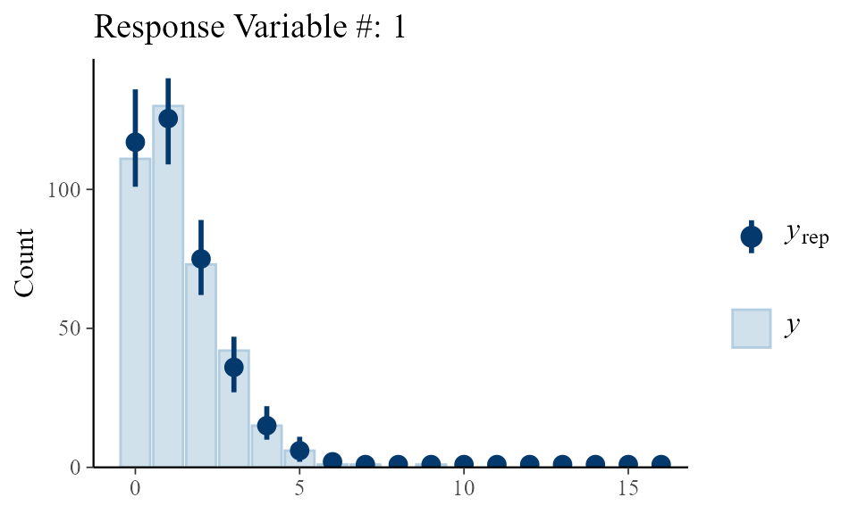
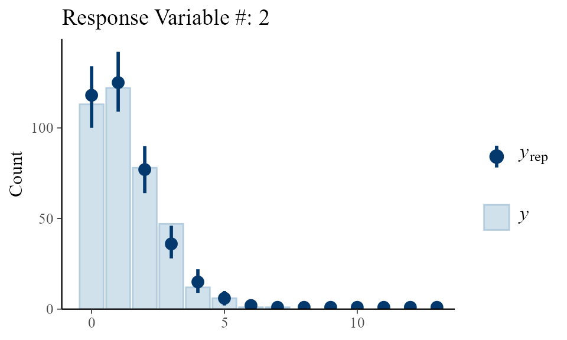

Example Real Data
Example-Real-Data.Rmd
library(MultRegCMP)The data contained in the package epl_20_21 corresponds
to the scores of the games of the English Premier League (EPL) during
the season 2020-2021. The data can be accessed as:
data("epl_20_21")
head(epl_20_21)
#> # A tibble: 6 × 4
#> HG AG HomeTeam AwayTeam
#> <dbl> <dbl> <chr> <chr>
#> 1 0 3 Fulham Arsenal
#> 2 1 0 Crystal Palace Southampton
#> 3 4 3 Liverpool Leeds
#> 4 0 2 West Ham Newcastle
#> 5 0 3 West Brom Leicester
#> 6 0 1 Tottenham EvertonWe can fit a bivariate regression model for the goals scored by the home and away team, as stated in the paper (in revision).
We first adjust the data to use the mcmc_cmp
function
y <- cbind(epl_20_21$HG, epl_20_21$AG)
X1 <- model.matrix(HG ~ 1 + HomeTeam + AwayTeam, contrasts = list(HomeTeam = "contr.sum", AwayTeam = "contr.sum"), data = epl_20_21)
X2 <- model.matrix(AG ~ 1 + AwayTeam + HomeTeam, contrasts = list(AwayTeam = "contr.sum", HomeTeam = "contr.sum"), data = epl_20_21)
X <- list(X1, X2)Then, we fit the model as
fit <- mcmc_cmp(y = y, X = X, S = 200000, nburn = 10000, scale_cov_b = 0.6,
scale_cov_beta = 0.01, scale_cov_gamma = 0.02, progress = "bar",
v0 = 50)After fitting the model, we can check the convergence visually of the parameters
plot.ts(fit$posterior_beta[[1]][,1:10], main = "Traceplot of the first 10 parameters associated to y_1")We can check the fitting of the model to the real data using the
function fitting_plot
fitting_plots(fit, type = "bar", S = 1000)